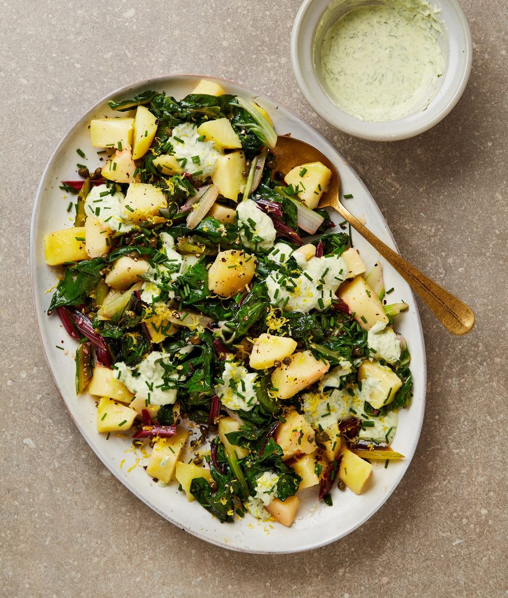

Lemony potatoes and rainbow chard with chive creme fraiche

These warm, lemony potatoes and chard are the perfect accompaniment for the porchetta. I find them equally delicious warm or cold. If you like, swap the chard for spinach or other hardy greens.
Bring a large saute pan of well-salted water to a boil, then turn down the heat to medium, add the potatoes and cook for 15-20 minutes, until fork tender but not breaking up. Drain in a colander and set aside.
Meanwhile, make the chive creme fraiche. Put 50g creme fraiche, the roughly chopped chives, a tablespoon of lemon juice and a quarter-teaspoon of salt in the small bowl of a food processor and blitz until almost smooth. Spoon into a bowl and fold in the rest of the creme fraiche.
Wipe the potato pan clean and return it to a medium-high heat. Add the olive oil, garlic and chard stems, then cook, stirring frequently to prevent sticking, for two to three minutes, until the stems soften slightly. Stir in the chard leaves and half a teaspoon of salt, and cook until just wilted. Add the potatoes and capers, stir to warm through, then take off the heat. Drizzle in the remaining tablespoon of lemon juice and sprinkle over plenty of cracked black pepper.
Arrange the potato mixture on a platter and spoon small pools of half of the creme fraiche on top. Scatter over the lemon zest and reserved chives, and serve with the remaining creme fraiche mix in a bowl on the side.